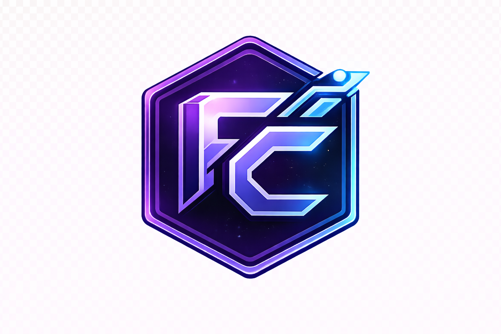

Random Searching
Endless tabs, outdated lists, sponsored results, and tools you forget five minutes later.

Curated tools for modern work
Private Tool Vault • Curated for modern work
FlowCache is a curated library of useful tools for research, business, creation, automation, and smarter online work — organized so you do not have to dig through the internet for hours.
Why FlowCache
The internet has too many scattered lists. FlowCache makes discovery feel cleaner, faster, and more intentional.
Endless tabs, outdated lists, sponsored results, and tools you forget five minutes later.
A cleaner library of useful tools, organized by purpose and updated with fresh finds.
Built For
Find tools for visuals, content, editing, and growth.
Discover systems for websites, automations, forms, and operations.
Use better tools for search, summaries, sources, and learning.
What FlowCache Is
FlowCache helps creators, founders, freelancers, students, researchers, and modern internet users discover better tools faster.
For creators
For business
For discovery
AI Usage Snapshot
FlowCache exists because the internet is moving fast. AI tools are no longer just for tech people — they are becoming part of everyday work, business, research, content, school, and productivity.
regularly use AI in at least one business function, according to McKinsey’s 2025 global survey.
of organizations reported using AI in 2024, up from 55% the year before.
of U.S. workers said at least some of their work is done with AI.
generative AI population adoption within three years.
Weekly Drop
A weekly edit of standout tools, smarter systems, and useful digital finds worth knowing now.
Free Preview
Five useful tools are open to browse. The deeper library lives inside the vault.
Full Access
Deeper categories for research, systems, content, design, automation, and modern work.
Deeper discovery tools for learning, source gathering, and smarter workflows.
Paid AccessApps and systems for streamlining admin, operations, and repetitive work.
Paid AccessUseful tools for content planning, editing, publishing, and brand growth.
Paid AccessUseful platforms and overlooked tools most people never hear about in time.
Paid AccessCurated
Organized
Private Access
Past Drops
Archived drops, past issues, and earlier curation from FlowCache.
A starter curation of useful writing tools, research helpers, and workflow upgrades.
View DropTools for content planning, clips, visuals, and faster brand execution.
View DropBetter tools for operations, automation, lead capture, and organized work.
View DropNewsletter
One thoughtful update each week.
Everything you need to know before exploring more inside FlowCache.
FlowCache is a curated discovery vault for useful digital tools, AI platforms, business resources, creator systems, and hidden internet finds.
AI is becoming part of everyday work, research, content creation, marketing, business operations, and school. FlowCache helps people find better tools faster instead of digging through random lists.
No. FlowCache is built to make tool discovery easier for beginners, creators, small business owners, students, researchers, and people who want useful resources without needing to be super technical.
Full access opens the deeper FlowCache library, including premium tools, expanded categories, hidden resources, and more curated recommendations beyond the public preview.
FlowCache is designed around fresh drops and ongoing curation, so the library can keep growing as better tools and resources are discovered.
For questions, partnerships, or support, reach out below.